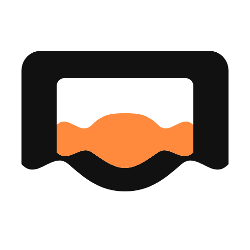
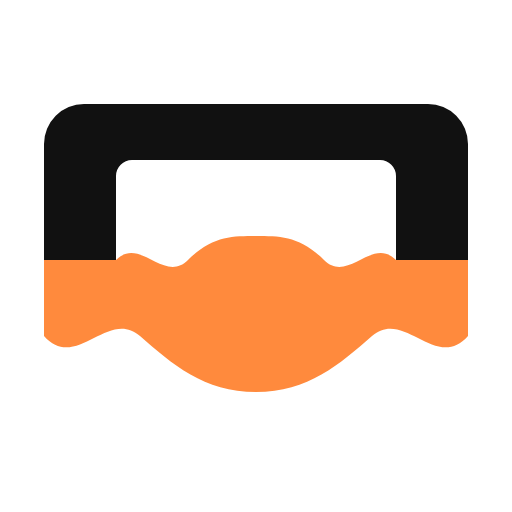

Κλειστό παραλληλόγραμμο: η κυματιστή μαύρη κάτω πλευρά μένει· το χρώμα είναι κάτω από αυτήν μέχρι την ίσια βάση. Όχι μέσα στην οθόνη, όχι αντί για το κύμα.
Λάθος (πριν)

Χρώμα μέσα στην οθόνηΑυτό δεν το ήθελες.
Λάθος (πριν)

Χρώμα αντί για κυματιστή πλευράΑντικαθιστά το κάτω bezel.
Νέα δομή
Hollow B + ember κάτω από το κύμαΆδεια οθόνη · μαύρο κυματιστό κάτω άκρο · ember κλείνει την ίσια βάση.
Νέα δομή
Ίδιο με cyan#3EC6FF
Εναλλακτικό
Solid οθόνη + ember κάτω από το κύμαΊδια λογική, χωρίς κούφιο bezel.